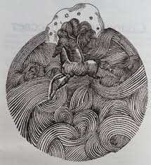

|
Не жалею, не зову, не плачу,
Все пройдет, как с белых яблонь дым.
Увяданья золотом охваченный,
Я не буду больше молодым.
Ты теперь не так уж будешь биться,
Сердце, тронутое холодком,
И страна березового ситца
Не заманит шляться босиком.
Дух бродяжий! ты все реже, реже
Расшевеливаешь пламень уст
О, моя утраченная свежесть,
Буйство глаз и половодье чувств!
Я теперь скупее стал в желаньях,
Жизнь моя, иль ты приснилась мне?
Словно я весенней гулкой ранью
Проскакал на розовом коне.
Все мы, все мы в этом мире тленны,
Тихо льется с кленов листьев медь…
Будь же ты вовек благословенно,
Что пришло процвесть и умереть.
1922 год
|